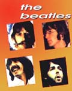
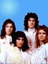

(р. 1934). В концепционной музыке
Шнитке традиционный музыкальный язык
сосуществует с многообразием современной
композиционной техники.
(р. 1934). В концепционной музыке
Шнитке традиционный музыкальный язык
сосуществует с многообразием современной
композиционной техники.Классическая музыка XX век - время новаторства в классической музыке. Одним из
известнейших композиторов был Альфред Шнитке
(р. 1934). В концепционной музыке
Шнитке традиционный музыкальный язык
сосуществует с многообразием современной
композиционной техники.
В нашем веке появились многие новые направления в музыке, корни которых, тем не менее, уходят в глубь истории. Одним из самых значительных явлений стало появление четверки «Битлз»,  которая определила не только музыкальные увлечения, но и стиль жизни целого поколения молодежи. Главное в песнях «Битлз» - чудесные мелодии, которые музыканты называют «evergreen» - вечнозеленые. Лучшей мелодией 70-х годов стала песня «Yesterday» группы «Битлз».
Открытием 80-х годов стала группа «Queen». Ее песня «Show must go on» по сей день остается популярной и любимой. В отличие от песен многих современных групп, важное значение в песнях «Queen» играют тексты - философская попытка осмысления жизни и своей роли в ней.
В Советском Союзе в период «оттепели» возникло новое направление в
поэзии и музыке - авторская песня. Его создали люди разных
профессий - актеры, журналисты, физики, литераторы - которые
сами писали стихи и музыку и сами исполняли свои песни. Одним из
самых любимых и известных авторов был актер Владимир Высоцкий (1938-1980).  С 1964 года Высоцкий работал в
Московском театре драмы и комедии на Таганке.
Он стал широко известен благодаря фильмам
«Вертикаль» (1967), «Короткие встречи» (1968),
телефильму «Место встречи изменить нельзя»
(1979).
С 1964 года Высоцкий работал в
Московском театре драмы и комедии на Таганке.
Он стал широко известен благодаря фильмам
«Вертикаль» (1967), «Короткие встречи» (1968),
телефильму «Место встречи изменить нельзя»
(1979).